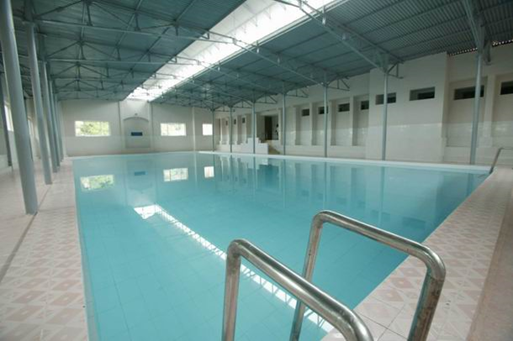
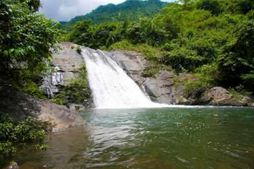
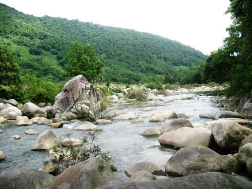
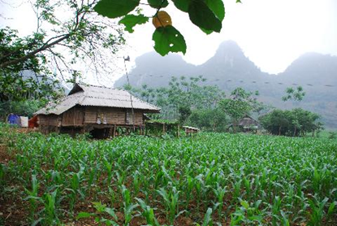
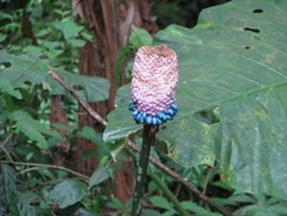

-

-> Suối khoáng Kim Bôi: Suối khoáng Kim Bôi thuộc xóm Mớ Đá, xã Hạ Bì, khoáng được xuất lộ ra từ vỉa đá vôi có tuổi địa chất khoảng 250 triệu năm, khi lộ thiên nước có nhiệt độ 34 - 360C, được đánh giá là suối khoáng có thành phần hóa học ổn định nhất. Qua kiểm nghiệm, nguồn nước khoáng Kim Bôi là điều kiện lý tưởng để phục hồi sức khỏe. Nước suối Kim Bôi đã được đóng chai làm nước giải khát. Nguồn khoáng nóng phun lên từ độ sâu 175,5 m và được bơm dẫn trực tiếp vào các bể tắm phục vụ du khách, nơi đây đã được khai thác du lịch sinh thái, nghỉ dưỡng, chữa bệnh...
-

-> Cửu thác Tú Sơn: Thuộc xóm Củ, xã Tú Sơn, có 9 dòng thác (thác Tiên Tắm, thác tình Âu Cơ, thác Trải Chiếu Quan Lang, Thác nàng Út Lót, Thác Bạc, Thác Triệu Phu, Tháng Thượng Ngàn, Thác Mẫu, Thác Thiên Ngọc Thạch) với 9 vẻ đẹp khác nhau cùng với sự phong phú, đa dạng địa hình, địa vật tạo nên một địa điểm vui chơi thú vị, ngọn thác cuối cùng nằm tại độ cao 1.300m là ngọn thác đẹp nhất và được ví như “Vườn thượng uyển”. Với khí hậu mát mẻ, nhiên thiên hùng vĩ, cửu thác Tú Sơn có thể khai thác du lịch sinh thái, nghỉ dưỡng cuối tuần, du lịch leo núi, khám phá…
-
-> Thác Mặt trời: Thuộc xóm Vó Khang, xã Kim Tiến, nơi đây được mệnh danh là chốn bồng lai tiên cảnh bởi mây phủ quanh năm, dòng suối uốn lượn hiền hòa, không khí se lạnh, thác tung bọt trắng xóa và đặc biệt còn rất hoang sơ, chưa có bất kỳ một dịch vụ nào phục vụ du khách, con đường dẫn tới thác phải men theo đường mòn hoặc đi đường suối trèo qua các phiến đá lớn nhỏ. Thác Mặt trời là thác chính, cao ở lưng chừng núi Thung. Ngoài ra còn có thác 1, thác 2, để đi hết ba tầng thác này phải mất hai ngày đi bộ đường rừng và leo suối. Ngoài thác Mặt Trời ở đây còn có suối tình nhân, thung lũng mộng mơ, hang tình yêu, rừng nguyên sinh với hàng ngàn động vật hoang dã. Đến đây, du khách không chỉ được leo thác, khđiểm mới đang xây dựng hoặc mới đưa vào khai tháckhám phá thiên nhiên mà còn được tìm hiểu văn hóa bản địa, thưởng thức ẩm thực xứ Mường Động như: gà đồi, măng nứa, xôi ngũ sắc, cá suối, rau muống luộc… Thác Mặt trời có thể phát triển thành một khu du lịch đặc thù về loại hình du lịch dã ngoại, khám phá thiên nhiên, tìm hiểu nét văn hóa của dân tộc Mường.
 -

-> Thung Rếch: Thuộc xóm Thung Rếch, xã Tú Sơn, rộng trên 1.300 ha có thung lũng rộng 629 ha, xung quanh là đồi núi và hệ thống hang động đẹp có nhiều mô hình trồng trọt cây ăn quả, cây công nghiệp, cây lương thực, trồng rừng và chăn nuôi gia súc, gia cầm đặc biệt là các loại động vật đặc sản như lợn rừng, nhím, gà gô… khí hậu trong lành có thể ví như một Đà Lạt thu nhỏ. Trước đây vùng đất này vốn chỉ có đồng bào Mường sinh sống. Kể từ sau khi dâng nước lòng hồ Sông Đà, bà con người Dao, người Mường chuyển về đây sinh sống và tạo nên sự đa dạng về văn hóa, khiến cho vẻ đẹp Thung Rếch càng sinh động thêm. Nơi đây rất thích hợp phát triển du lịch sinh thái, tìm hiểu bản sắc văn hóa dân tộc Mường, Dao.
-
-> Khu bảo tồn thiên nhiên Thượng Tiến: Thuộc phạm vi 3 xã Thượng Tiến, Kim Tiến của huyện Kim Bôi và xã Quý Hòa của huyện Lạc Sơn. Khu bảo tồn thiên nhiên Thượng Tiến là một trong các Khu bảo tồn được thành lập đầu tiên ở Việt Nam cũng như ở tỉnh Hòa Bình. Thượng Tiến nằm ở cửa ngõ của vùng sinh thái Tây - Bắc Việt Nam nơi có nhiều hệ sinh thái đặc biệt và cũng là những vùng phân bố quan trọng của nhiều loài động, thực vật quan trọng của Việt Nam và của bán đảo Đông Dương. Về động vật, cho đến thời điểm hiện tại tổng số 59 loài thú, 128 loài chim, 18 loài bò sát, 35 loài ếch nhái đã được ghi nhận trong KBT. Trong đó, có khoảng 80 loài động vật có tên trong Nghị định 32/2006/NĐ-CP, trong Sách Đỏ Việt Nam (2007) và Danh lục đỏ IUCN (2011). Về thực vật, tổng số có 648 loài thuộc 397 chi, 144 họ, 4 ngành thực vật bậc cao có mạch, trong đó có 39 loài có tên trong Nghị định 32/2006/NĐ-CP, trong Sách Đỏ Việt Nam (2007) và Danh lục đỏ IUCN (2011). Với tính đa dạng sinh học cao, Khu bảo tồn thiên nhiên Thượng Tiến đóng vai trò vô cùng quan trọng trong chiến lược bảo tồn đa dạng sinh học của quốc gia, khu vực và quốc tế. Nơi đây rất thích hợp để phát triển du lịch sinh thái, nghiên cứu khoa học, …

Tài nguyên du lịch tự nhiên trên địa bàn huyện khá đa dạng, phong phú với hệ thống các hang động, những dãy núi đá vôi, thác nước, khu rừng nguyên sinh, thung lũng,… Một số điểm tài nguyên chính có tiềm năng phát triển du lịch như: